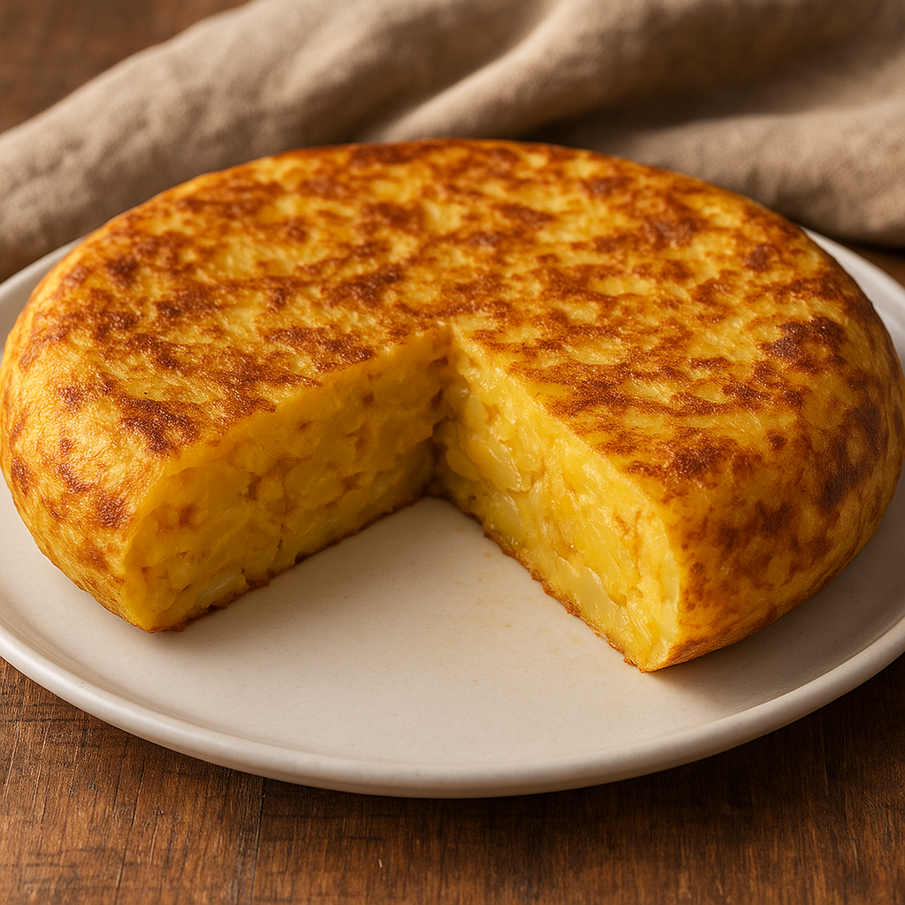

Tortilla Recipe
Home

Ingredients
- 500 grams potatoes
- 6 eggs
- 1 large white onion
- Salt
- Virgin oil
Instructions
- Peel the potatoes and rinse them thoroughly under cold water. Slice them thinly using a sharp knife.
- In a large frying pan, heat about ½ inch of good-quality extra virgin olive oil over medium-low heat. Add the sliced potatoes, making sure they are fully covered with oil. Add more oil if necessary.
- Cook the potatoes gently on low heat for approximately 20 minutes. It's fine if some pieces start to break apart.
- While the potatoes are cooking, crack the eggs into a large bowl, beat them well, and season with a pinch of salt.
- Thinly slice the onion and cook it in a separate pan with a bit of oil over medium heat until it starts to caramelize, about 10 minutes. Add a splash of water occasionally to deglaze the pan and prevent burning. Drain any extra oil and mix the onions into the beaten eggs.
- Once the potatoes have cooled slightly, combine them with the egg and onion mixture. Stir well and let it rest for 20 minutes.
- Carefully pour out the oil used to cook the potatoes and save it for another use. Return the pan to medium-low heat and pour in the egg mixture.
- Cook the tortilla gently for about 6 minutes, allowing the bottom to set without burning.
- To flip the tortilla, place a large plate over the pan, flip it quickly, and slide the tortilla back into the pan. It's okay if some egg spills. Cook the other side for another 6 to 8 minutes, until the tortilla is fully set.